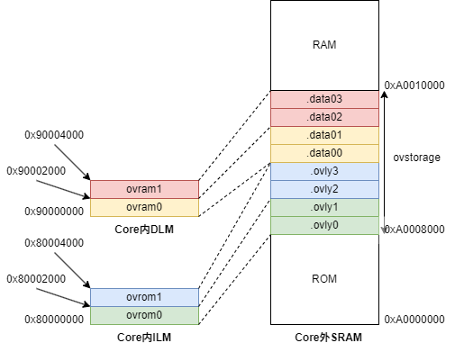

在链接脚本中使用OVERLAY命令¶
问题说明¶
CPU Core内的SRAM具有速度快，容量小，面积大的特点。在嵌入式系统中，这部分Core内的RAM很可能无法放下所有的函数。
为了解决这个问题，有一种方案是在链接脚本中使用OVERLAY 命令。
GNU ld 提供的OVERLAY命令，可以在同一块内存区域上“叠放”多个段（Section）。若干个段可以共享运行时的
VMA（Virtual Memory Address），只是在运行时需要手动管理这些Overlay的段的加载和卸载。
那么如何在Nuclei Studio IDE中使用OVERLAY命令呢？本文将提供一个示例程序演示如何使用OVERLAY命令。
解决方案¶
示例程序¶
demo_overlay是基于
Nuclei Studio IDE 2025.02
创建的示例工程，支持Linux和Windows两种平台，演示了如何在链接脚本中使用OVERLAY命令。
示例工程中的代码与Overlay Sample Program 中提供的代码基本一致，主要区别是在main函数中增加了测试结果的打印，另外根据evalsoc的地址映射关系 对链接脚本做了修改。
├── bar.c
├── baz.c
├── foo.c
├── grbx.c
├── overlays.c
├── ovlymgr.c
└── ovlymgr.h
原始代码可以从bminor/binutils-gdb/gdb/testsuite/gdb.base获取。
Overlay布局¶

在我们的evalsoc上，如果程序无法完全放在Core内的ILM/DLM上，就可以采取上图中的方法
将部分Section以Overlay的形式动态加载到ILM/DLM中运行。
.ovlyx和.data0x 共8个Section的LMA（Load Memory Address）都位于Core外的SRAM上，
但它们的VMA都在Core内，并且有部分重叠。
编写链接脚本¶
在MEMORY命令中先划分出需要用到的Memory区域，比如这里4个Core内的区域ovrom0, ovrom1,
ovram0, ovram1和Core外的ovstorage区域。这些Memory区域的大小都可以根据实际的代码和数据的大小进行调整。
MEMORY
{
rom (rxa!w) : ORIGIN = SRAM_MEMORY_BASE, LENGTH = SRAM_MEMORY_ROM_SIZE
ovstorage (rwa) : ORIGIN = SRAM_MEMORY_BASE + SRAM_MEMORY_ROM_SIZE, LENGTH = SRAM_OVLY_STORAGE_SIZE
ram (wxa!r) : ORIGIN = SRAM_MEMORY_BASE + SRAM_MEMORY_ROM_SIZE + SRAM_OVLY_STORAGE_SIZE, LENGTH = SRAM_MEMORY_SIZE - SRAM_MEMORY_ROM_SIZE - SRAM_OVLY_STORAGE_SIZE
ovrom0 (rwx) : ORIGIN = ILM_MEMORY_BASE, LENGTH = ILM_OVLY_SIZE0
ovrom1 (rwx) : ORIGIN = ILM_MEMORY_BASE + ILM_OVLY_SIZE0, LENGTH = ILM_OVLY_SIZE1
ovram0 (rwx) : ORIGIN = DLM_MEMORY_BASE, LENGTH = DLM_OVLY_SIZE0
ovram1 (rwx) : ORIGIN = DLM_MEMORY_BASE + DLM_OVLY_SIZE0, LENGTH = DLM_OVLY_SIZE1
}
OVERLAY需要放在SECTION命令中实现。例如下方的代码就是将.ovly0和.ovly1两个段放到ovrom0所
表示的同一个VMA地址区间中，同时它们的LMA则是连续地位于ovstorage所表示的地址区间中。
OVERLAY :
{
.ovly0 { *foo.o(.text .text.*) }
.ovly1 { *bar.o(.text .text.*) }
} >ovrom0 AT>ovstorage
参考Automatic Overlay Debugging，
链接脚本中的以下代码则是将Overlay的段的VMA, LMA和数量以_ovly_table和_novlys变量的形式供C代码访问；
在ovlymgr.c中进一步实现动态加载和卸载Section的功能。
/* _ovly_table used for gdb debug overlay sections */
_ovly_table = .;
_ovly0_entry = .;
LONG(ABSOLUTE(ADDR(.ovly0)));
LONG(SIZEOF(.ovly0));
LONG(LOADADDR(.ovly0));
LONG(0);
...
_novlys = .;
LONG((_novlys - _ovly_table) / 16);
测试结果¶
观察编译后生成的map文件，可以看到相应的代码段和数据段都按照预期的VMA和LMA进行了分配。
例如.ovly0和.ovly1具有相同的VMA 0x80000000，同时它们的LMA分别为0xa0008000和0xa0008028。
.ovly0 0x80000000 0x28 load address 0xa0008000
*foo.o(.text .text.*)
.text.foo 0x80000000 0x28 ./application/foo.o
0x80000000 foo
[!provide] PROVIDE (__load_start_ovly0 = LOADADDR (.ovly0))
[!provide] PROVIDE (__load_stop_ovly0 = (LOADADDR (.ovly0) + SIZEOF (.ovly0)))
.ovly1 0x80000000 0x28 load address 0xa0008028
*bar.o(.text .text.*)
.text.bar 0x80000000 0x28 ./application/bar.o
0x80000000 bar
[!provide] PROVIDE (__load_start_ovly1 = LOADADDR (.ovly1))
[!provide] PROVIDE (__load_stop_ovly1 = (LOADADDR (.ovly1) + SIZEOF (.ovly1)))
main函数中通过OverlayLoad切换调用不同的函数，并在最后将每个函数的返回值累加，校验累加后的结果。
/* load .text and .data for `foo` */
OverlayLoad (0);
OverlayLoad (4);
a = foo (1);
/* load .text and .data for `bar` */
OverlayLoad (1);
OverlayLoad (5);
b = bar (1);
/* load .text and .data for `baz` */
OverlayLoad (2);
OverlayLoad (6);
c = baz (1);
/* load .text and .data for `grbx` */
OverlayLoad (3);
OverlayLoad (7);
d = grbx (1);
e = a + b + c + d;
if (e != ('f' + 'o' +'o'
+ 'b' + 'a' + 'r'
+ 'b' + 'a' + 'z'
+ 'g' + 'r' + 'b' + 'x')) {
printf ("Overlay Test FAIL\r\n");
} else {
printf ("Overlay Test PASS\r\n");
}
通过QEMU仿真或者利用FPGA开发板进行测试，可以看到如下的结果。其中Overlay Test PASS表明结果符合预期。
Nuclei SDK Build Time: Sep 25 2025, 17:02:19
Download Mode: SRAM
CPU Frequency 16003235 Hz
CPU HartID: 0
Overlay Test PASS
注意事项¶
- 数据段Overlay在要替换Section时，需要保存数据，也就是需要“卸载”的操作，将数据保存到外部SRAM中；而 代码段是只读的，所以不需要Unload。
- 在示例工程中，ILM/DLM都不会经过Cache，所以不需要考虑Cache一致性的问题。但如果Overlay的Section所在
的VMA是Cacheable的区域，则一般都需要考虑Cache一致性的问题，除非ICache和DCache之间有硬件支持的Snoop。
更多细节可以参考示例工程中
ovlymgr.c的实现。